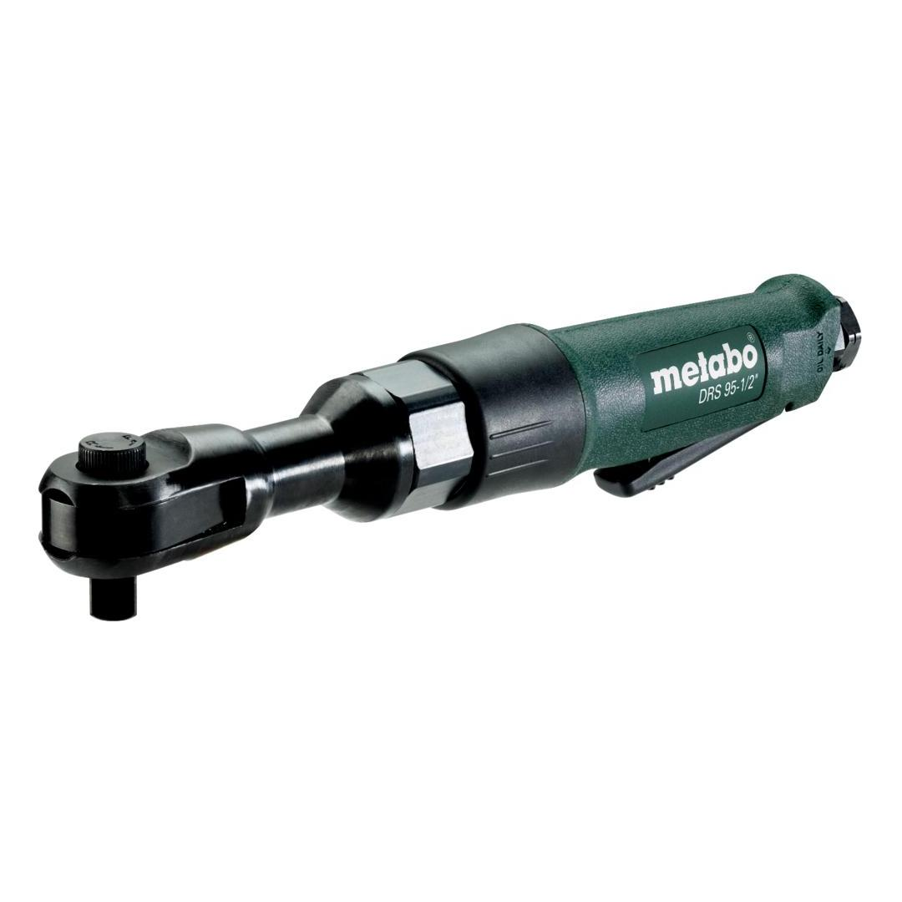

601553000

| Square holder | 1/2" |
| Speed (RPM) | 160 rpm |
| Max. loosening torque | 95 Nm / 841 in-lbs |
| Operating pressure | 6.2 bar / 90 psi |
| Air requirement | 450 l/min / 16 cfm |
| Square holder | 1/2" |
| Speed (RPM) | 160 rpm |
| Max. loosening torque | 95 Nm / 841 in-lbs |
| Weight | 1.2 kg / 2.6 lbs |
| Impact screwdriving | 3.3 m/s² |
| Uncertainty of measurement K | 0.83 m/s² |
| Sound pressure level | 92 dB(A) |
| Sound power level (LwA) | 103 dB(A) |
| Uncertainty of measurement K | 3 dB(A) |
| EURO Plug-in nipple 1/4" |
| ARO/Orion Plug-in nipple 1/4" |
| ISO Plug-in nipple 1/4" |
| Oil bottles |